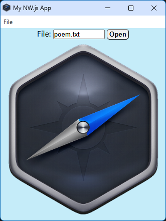

In VSCode, press [F5] to build and run the app.
The result should look something like this:

You can now click on the [Open] button to display the poem,
that is read form a local disk file.
Now that everything is working correctly,
let's check out what went on inide the app.